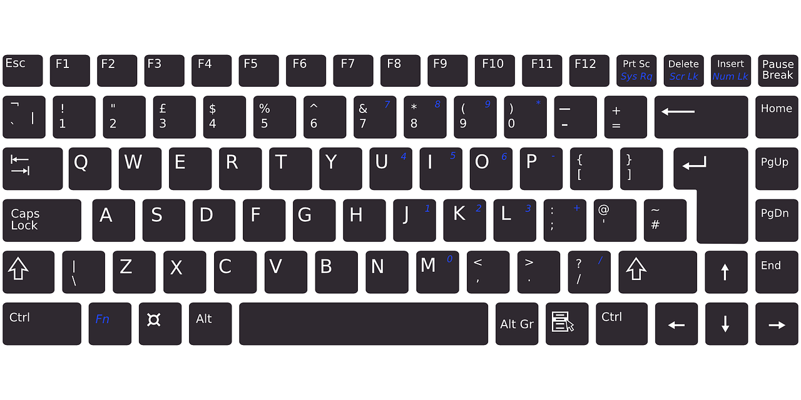

Intention
Short-term:
My current intention is to learn the fundamentals of powerful emerging technologies. I wish to grasp the spectrum of available tools for building progressive web applications and software, by understanding recent improvements and implementations of Javascript. I love designing and building something beautiful from scratch. I revel in creative processes, especially within a team setting. Perhaps above all, I aim to enjoy what I do and do what I enjoy as much as possible with those who wish the same.
I intend to learn as much as possible during my time at Turing School while developing professional skills in collaboration, pairing, interpersonal communication, organization, time management, project management, productivity/work flow, and leadership. Afterall, we chose to learn and continue building software and writing code for the sake of each other, for the sake of people, not computers. Turing is all about activating human potential, a vision close to my values.

Long-term:
All too often humans can overlook the bigger picture of attaining fulfillment in all areas of life, not just a career. I definitely intend to lead a happy and adventurous life. Despite my professional goal to become an expert in developing software, communicating through multi-media, teaching, and consulting, I intend to raise the general level of satisfaction and quality experience of living day to day by creating and sustaining a deeply authentic relationship with self, others, and the very technology we build and use together.
Focus:
Strong Javascript Fundamentals
Strong CSS Techniques
Full Stack Javascript: MEAN (MongoDB, ExpressJS, AngularJS, Node.js)
Skills
Languages/Technologies:
Javascript | JQuery | AJAX | Ruby | HTML | CSS | SASS | SCSS | Node.js
Express | React | React Native | Ember | JSON API | Flux | Redux
Electron | PhoneGap/Cordova | Progressive Web Applications

Software Engineering Fundamentals:
TDD | Github | Workflow | Web Application Deployment | Build Tools
Integration Testing | Data Storage | Websockets | Web Components
ServiceWorkers
Design Skills:
UX | Wiring/Prototyping | HTML5 Canvas | Typography | Sketch | Flexbox
Accessibility & ARIA | D3 Data Visualization | HTML5 Media APIs:
Web Audio API, WebGL for 3D-rendering, Geolocation API